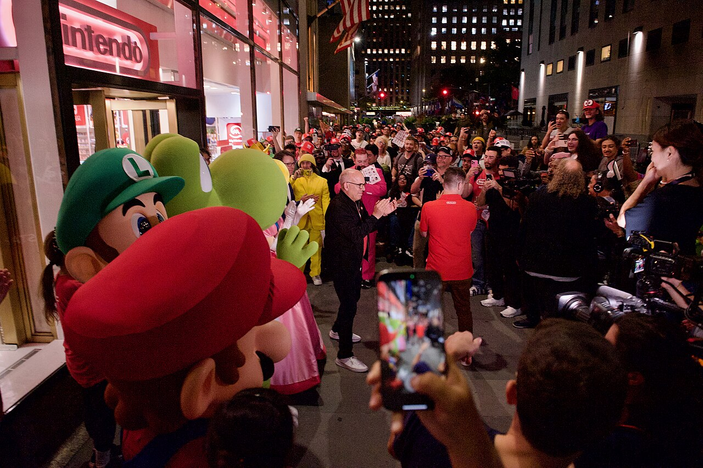

Players line up for the launch of the Nintendo Switch 2 in New York City
2025, June 12

Players line up for the launch of the Nintendo Switch 2 in New York City
2025, June 12
United States
On June 4, Nintendo fans gathered at the Nintendo New York store in New York City, United States to celebrate the launch of Mario Kart World and the Nintendo Switch 2 console, the successor to the Nintendo Switch that came out in 2017. A volunteer reporter from Wikinews, SWinxy, attended the event.In the afternoon, players were given a demo of Mario Kart World, which was about to be released at midnight. World is the first new original Mario Kart game since Mario Kart 8 released more than a decade ago on the Wii U (and re-released on the Nintendo Switch in 2017 as Mario Kart 8 Deluxe, and have added expansion packs to it).
"[I've] been playing the same Mario Kart with my friends for a decade, so [I'm] excited to have something new and try and convince them to buy a $400 game system," said an attendee named Blake.
Under a pair of tents in Rockefeller Center, the company set up 24 stations where players could play the new game mode, Knockout Tour, where a series of interconnected segments are played to eliminate the worst-performing players. Though the game supports 24 players in the same match, the setup split people into two groups of twelve. ("I would be pretty surprised if it wasn't [all] connected," Blake said before people were let in.)
A couple, Jasmine and Valery, were at the front of the line. They arrived around 11:00 a.m. New York Time (1500 UTC), and waited more than four hours to experience the game. Nintendo didn't allow people to line up until noon, at which point fewer than a dozen people had arrived, according to Jasmine. Though Jasmine didn't initially care for buying World, after the demo she excitedly said "I might change my mind now. I might want Mario Kart [World]" and get a Switch 2.
Fans were excited to play, and people enjoyed it. Some recorded their play sessions, took selfies, or vlogged. Many people wore Nintendo-branded shirts for the occasion. Some dressed up as characters from the Mario franchise. A few wore YouTuber merch, such as the Nintendo YouTuber Etika who died in 2019.
"It was really fun," and "so fast," said Alvaro, an attendee who traveled from Mexico. "It feels really polished, it feels really good," he added. "No matter what it is, I feel like there's going to be excitement for it," said Matt, another attendee, who came with his girlfriend but didn't end up playing.
"I had so much fun just watching the chaotic gameplay unfold" despite being eliminated quickly, said a player with a group of friends. "I think that they've really outdone themselves with this Mario Kart formula in a way that everyone can have fun regardless of if they're winning or losing."
Meanwhile, on the other side of the street, people were lined up for the midnight release of the new console. Christopher Evangelista, known as ChickenDog, had staked his position out for two entire months, uploading daily vlogs to his YouTube channel. By the time the line for the World demo petered out, just before 5:00 p.m. New York Time (2100 UTC), Nintendo staff ushered people across the street—keeping the same line order.
By 11:30 p.m. New York Time (0330 UTC June 13), the line resembled the one earlier in the afternoon, with many people going to both demo the Mario Kart game and who were picking up their Switch 2.
A few minutes before midnight, mascots for Mario, Luigi, Peach, and Yoshi came out with Nintendo of America CEO Doug Bowser, who thanked the crowd for coming and waiting for so long.
ChickenDog was the first to buy the Switch 2 at the New York store. At first, at the start of April, it was just him waiting. But within a week a few more people started appearing, taking shifts during daytime hours.
"Come Memorial Day, more people aggregated, like 15–20 individuals showed up, so that's when we doubled down in our shifts," said Rinaldi Gomez, one of the very first people in line. "Some of us stayed overnight and we took turns." "It was a group work," Gomez added.
The second to buy, Alex, had been only out for around 20 days. "Me and ChickenDog, who's in first, have been planning to do this for two years since we met at the Legend of Zelda: Tears of the Kingdom launch." Alex added, not negatively, that when he came to line up, "I started pulling night shifts while he did all of the fun stuff."
Those who came to line up had acquired a "Warp Pipe Pass" from a lottery system Nintendo had introduced for these launches. Evangelista, Alex, Gomez, and everyone else in line were those lucky enough to be chosen to get it at the launch event.
Nintendo invited celebrities, including YouTuber Scott Wozniak and comedian Bowen Yang. Yang left briskly, but Wozniak stayed and chatted with fans. A long-running joke in Wozniak's series, Scott the Woz is the video game series Gex. A fan brought a physical copy of Gex 3 that Wozniak signed. (Wozniak, who is from Ohio, reported being very tired.)
By the time this reporter left, a little after 1:00 a.m. New York Time (0500 UTC June 13), more than 100 people were still in line for the Switch 2. The wave of people after this, drawn from the Warp Pipe Pass, were to get their consoles when the store reopened in the morning.